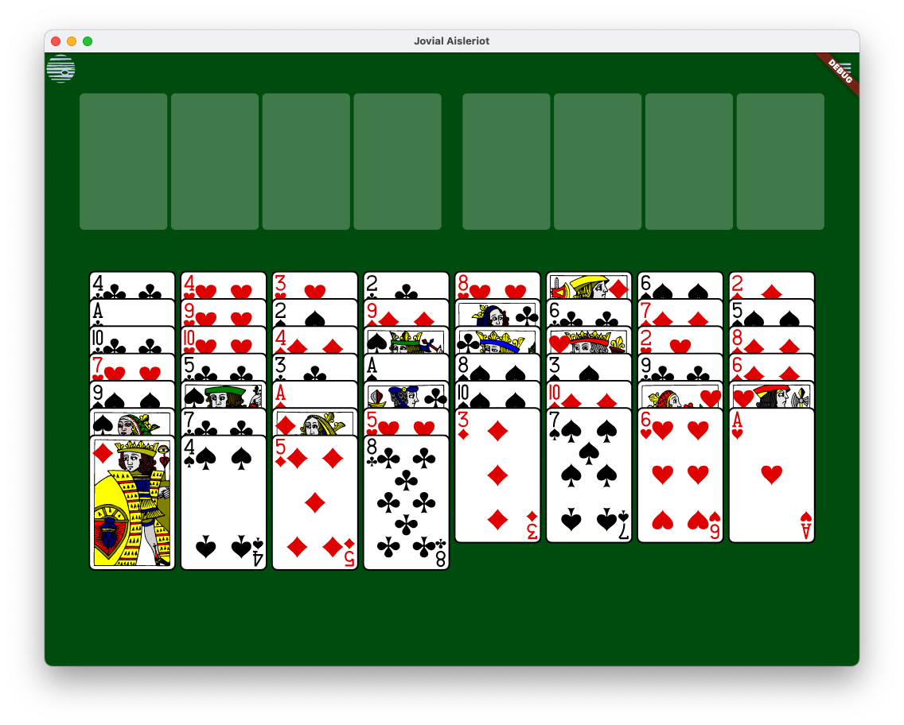

Jovial Aisleriot - A Port of GNOME Solitaire Games to Flutter

Jovial Aisleriot will be a port of some of the GNOME Solitaire games
to Flutter, starting with Freecell.
The source is on Github,
and it's easy enough to build on the popular platforms.
Honestly, I mostly wrote it because
when I got a new Mac to replace my Linux machine, I couldn't find a good,
free version of Freecell. Porting Aisleriot was a good way to keep busy
while under covid lockdown. You can also
run it on
the web. Some performances statistics are collected; these can be found
under the help menu.
A few performance observations:
- The JavaScript runtime gives worse performance than the native runtime,
as one would expect, but not by as big a factor as I would have guessed.
It's maybe about 1/3rd the speed?
- On a very old, slow tablet (a Samsung T700), performance of the code
written in Dart is good. For example, the "Guyenne Classic" deck is
a demanding 3 MB SVG. With that deck, on the Samsung the time spent
in a typical paint call is around 40 ms. The overall animation
speed, on the other hand, made the program unusable - I would guess
this is from the graphics rendering speed, which is intrinsic to the
platform and the asset. Caching rendered images for the SVG cards
fixed this, and made it fine on the tablet.
- On a less horrible, but still pretty slow Galaxy Note 5, the
non-bitmapped Anglo deck was usable without caching, but the cached
bitmapped version is
much better. Again, the bottleneck isn't in the dart code -
time per frame spent in paint was around 20 ms, so the bottleneck
lies elsewhere.
- On the older devices, things like Flutter's built-in dropdown
and popup menus are also pretty laggy, so maybe it is time for me
to get a newer phone :-)
- I guess Flutter isn't doing save-unders on that hardware.
- From this, it appears worthwhile to cache a pre-rendered
image in painters, e.g.
in
jovial_svg's widget.
- Yep - on the T700 with cached images, performance is flawless,
with perhaps a second or two of waiting when changing the deck.
- Performance on modern hardware is great - no noticable lag.
- In general, I could not find a case where the part written in
Dart (both this app and the `jovial_svg` library) is a significant
bottleneck.
I snagged the SVG card assets from the GNOME program, but discovered to my
surprise that there wasn't an SVG renderer for Flutter with complete enough
support for SVG to render these card assets. So I did what any normal
person would
do, and wrote one. I've
published it to
pub.dev.

Bill Foote